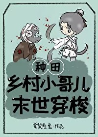

Shen Qing era conocido en su aldea como un hombre fiero con el que nadie quería casarse. Tras ser expulsado de su casa junto con su madre por sus abuelos parciales y un padre que ansiaba un hijo, no tuvo más remedio que ganarse la vida vendiendo leña.
Un día, mientras cortaba leña en las montañas, se topó con un jabalí. Preso del pánico, huyó a una cueva, solo para descubrir que al otro lado de la cueva se extendía un mundo completamente diferente.
Este mundo estaba plagado de zombis putrefactos, animales mutantes y plantas extrañas, pero lo que llamó la atención de Shen Qing fue el oro, la plata, las joyas, el jade antiguo y los relojes de lujo relucientes que se exhibían en un puesto de un mercado callejero...
¿Y el precio? Solo un bollito al vapor.
Con una bolsa llena de bollos en la mano, Shen Qing tragó saliva con dificultad. No solo le interesaban los tesoros del puesto, sino que también se había fijado en el hombre guapo y de aspecto ingenuo que estaba en cuclillas detrás de la mesa, con una mirada clara y inocente.
…
Song Kaiji había luchado durante casi un año en el apocalipsis, buscando incansablemente a sus familiares desaparecidos. Todos los días, instalaba un puesto en el mercadillo con la esperanza de obtener noticias.
Inesperadamente, un acto de bondad le reportó una ganancia inesperada: no solo alguien finalmente compró la "chatarra" que había estado acumulando, sino que también se aferró a un patrocinador de oro, consiguió un patrocinador adinerado y alcanzó la cima de su vida.
“Todo lo que hay en este puesto: oro, joyas, jade... ¡todo por solo dos catties de arroz! ¡Dos catties de arroz, y no te arrepentirás! ¡Dos catties de arroz, y no te estafarán!”
“¿Y el dueño del puesto? ¿Estás en venta?”
Edición limitada. Solo disponible para Shen Qing.
Después de que cesa la lluvia, el cielo se extiende infinito y azul.
Guía de lectura:
1. La cueva conecta dos mundos. El protagonista viaja entre ellos, con el escenario principal en la antigüedad y el secundario en el apocalipsis.
2. Universo alternativo. El mundo antiguo consta de tres géneros: hombres, ger y mujeres. El protagonista es un ger, y más adelante habrá embarazo masculino (mpreg).